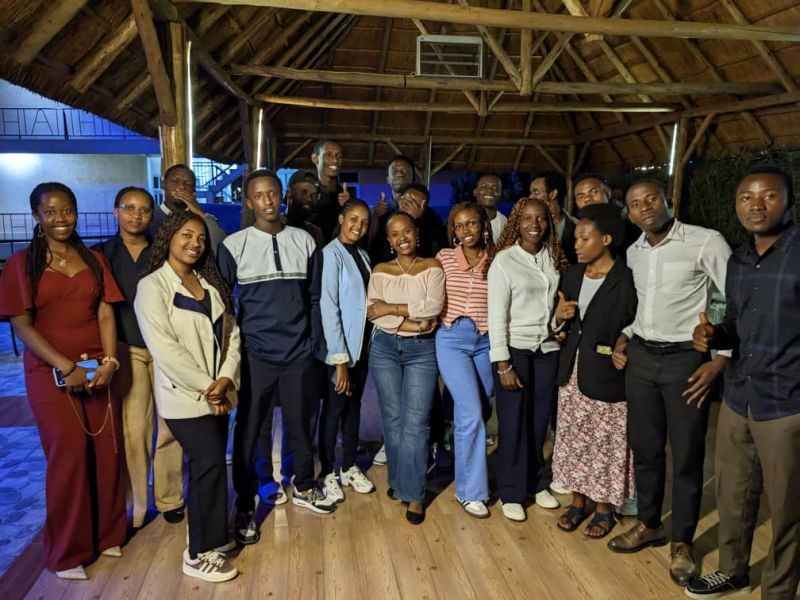
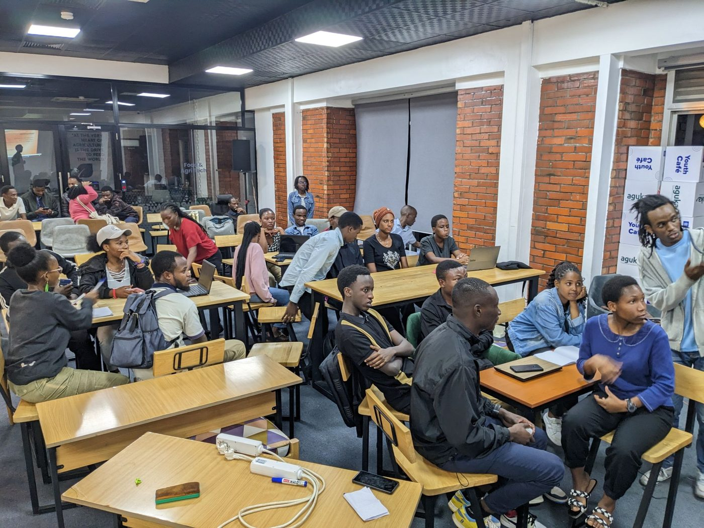
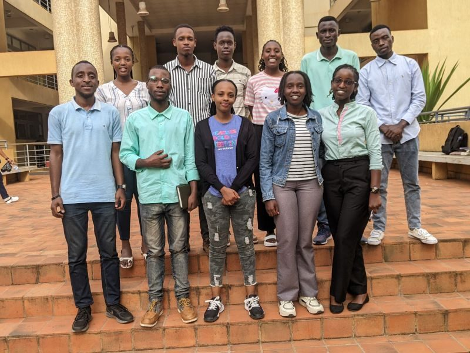
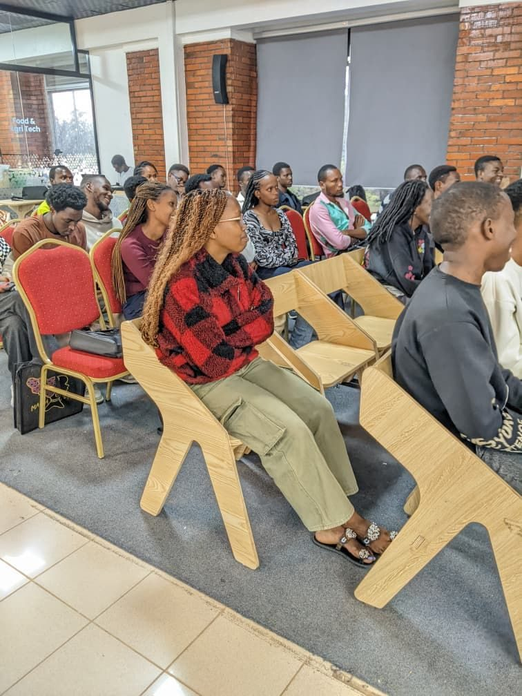

Announcements, event recaps, and community updates from MSAR.

Members gathered at Kigali View Hotel to celebrate the year’s progress and set goals for the year ahead.
Read more
MSAR’s weekly sessions are back, mixing core theory with hands-on practice in Excel, Power BI, Python, and R.
Read more
A new semester means new faces — here’s how to get involved with MSAR from week one.
Read more
MSAR’s guest talk sessions connect members with people already working in data and statistics.
Read more